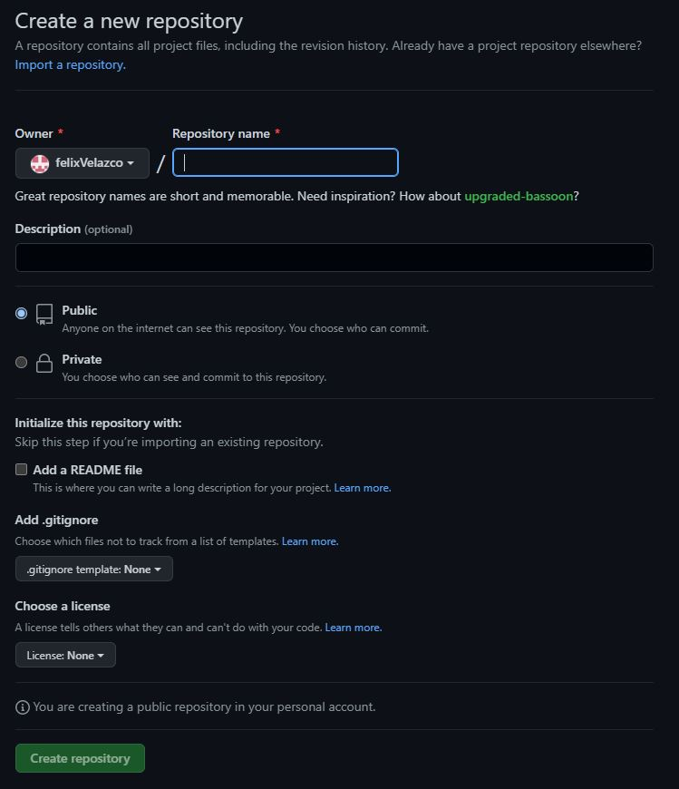
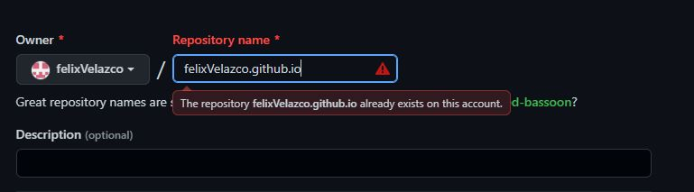
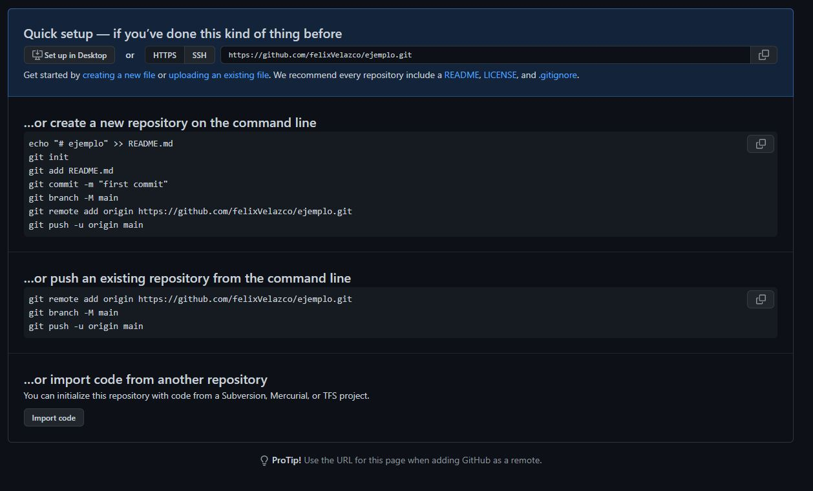
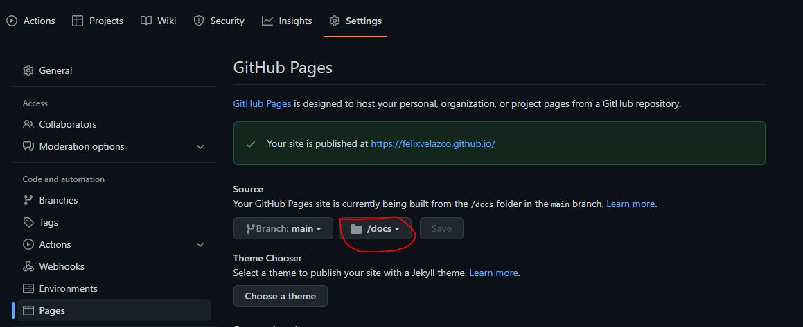
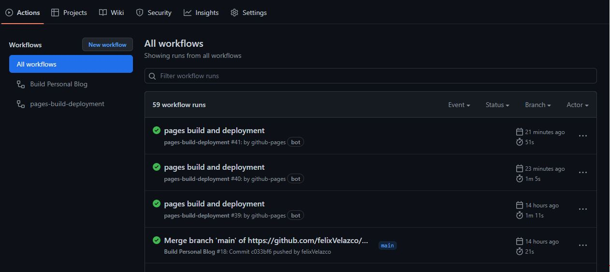

3...2...1...Despliegue!
Llego el momento de subir nuestros blogs al internet, y que la gente nos lea, el despegue ha llegado y espero que estés listo!
Si no has leido mi post anterior, donde les hablaba de como crear tu propio blog con Hugo, te dejo el link aquí. Con esto dicho, empecemos con el tutorial de hoy!
Requisitos
Desplegar nuestro sitio
Crear nuestro archivo yml
Debes de crear un archivo .github/workflows/blog.yml, puedes crear las carpetas y archivos de manera visual, o desde la terminal con los comandos (toma en cuenta que el comando se corre desde la carpeta raiz de tu blog)
> mkdir .github & mkdir .github/workflows & touch .github/workflows/blog.yml
Abrimos este archivo y escribimos lo siguiente:
1 |
|
Y con esto aplicamos un git add . y nuestro git commit -m "Crear archivo .yml.
Este archivo nos servirá para automatizar el proceso en nuestro Github actions, así no nos tendremos que preocupar por ciertas cuestiones después. Si quieres saber más sobre los github actions, te dejo este link para más información.
Configurar nuestro repositorio en GitHub
Sigamos con la creación y configuración de nuestra GitHub pages
Si ya has trabajado con Github pages anteriormente puedes saltearte este punto.

El nombre de tu repo debe de ser <username>.github.io donde sustituyes el <username> por tu nombre de usuario en github. Quedando algo como esto
Este paso es muy importante para la creación de una página en github.

En este caso a mi me marca rojo debido a que ya existe este repositorio en mi cuenta, pero a ustedes les debe de aparecer en verde. Una vez hecho esto, le dan simplemente en Crear repositorio.
Les mostrará la siguiente ventana.

Subir nuestro repo a github
Como nosotros ya tenemos nuestro repositorio local en la computadora, vamos a irnos por la segunda opción, copian las líneas que vienen ahí y las pegan en una terminal que esté en la carpeta raíz de tu blog. Al actualizar la página de github veremos que ya están cargados nuestros archivos.
Nos iremos a la pestaña settings, y seleccionamos la opción pages, en donde modificaremos la rama a main y seleccionamos /docs. También en este punto estará la url de nuestro blog, el cual entraremos más tarde.

Nos vamos a la pestaña de Actions, y aquí nos encontraremos el estado de nuestro sitio web. Al momento de estar corriendo, estará en color amarillo, de ahí pasará a estar de color verde o rojo, dependiendo si
todo está bien o no respectivamente.

Si algo sale mal en el proceso, puedes darle click a la acción, y te dirá el error que encontró, pero si todo está bien, ya podrás acceder a tu blog con la url que obtuviste anteriormente.
Finalmente, cada vez que quieras agregar un nuevo post desde tu computadora, hasta github, deberás crear tus commits necesarios con git, y una vez que tengas todo listo, corres el siguiente comando.
> git push
Muy probablemente, te marcará un error, debido a que nuestra action en el archivo blog.yml ejecutó ciertos comandos que modificaron el repositorio remoto con respecto al local. Para solucionar esto solo
corre el comando git pull y vuelve a correr git push, y listo.
Con esto termina el post de hoy, espero les sirva la información de hoy y nos vemos pronto.